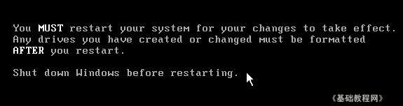

VirtualBox 虚拟机基础入门教程
作者：TeliuTe 来源：基础教程网
四、磁盘分区 返回目录 下一课新建的磁盘需要分区后才行，原版的WinXP带有分区程序，我们也可以用工具来先分区，下面我们来看一个练习；
1、Fidsk分区
1）插入Win98启动软盘或加载软盘镜像，或者其他带有DOS工具箱的镜像，然后启动虚拟机到DOS下；
2）启动成功后会有一篇英文，大意是没找到硬盘，最下面出来一个A:\>，新建的硬盘需要分区后才能用；
3）从键盘输入fdisk然后按一下回车，出来一篇英文，最下面一行有个白亮的Y，直接按一下回车键确认；
4）然后出来几排英文，最下面一行有个白亮的1，直接按一下回车键确认，这儿是创建分区；
5）然后出来一个还是白亮的1，直接按回车键，这儿是创建主分区；
6）然后很快的闪动几下，出来一个提示白亮的Y，直接按回车键确认，这儿是分区大小设为最大；
7）然后还是很快闪动，出来一篇英文提示，最下面有一行白亮ESC，按一下ESC键返回；

8）按键盘方向键左边的右Ctrl，出现鼠标指针后，点窗口上的菜单“控制－退出”，
在出来的关闭面板上点“强制退出－确定”关闭虚拟机，分区也成功了，
DOS下面可以直接关闭虚拟机，Windows是执行关机命令，右Ctrl键是切换鼠标的热键；
2、用PQ分区
1）如果能找到XP工具盘，里面有PQ工具，也可以用来分区，插入光盘或者加载镜像文件，然后启动虚拟机；
2）稍等进入窗口后，点上边的菜单“作业”（或者“操作”），选择“建立”（或“创建”）菜单；
3）接下来点上面的下拉按钮，选择“主分区”，然后点下面的“确定”；
4）回到窗口后，点下面的“执行”或应用按钮，在出来的提示中点“是”，然后很快完成，关闭窗口后完成分区；
本节学习了新建磁盘分区的基本操作，如果你成功地 完成了练习，请继续学习下一课内容；
本教程由86团学校TeliuTe制作|著作权所有
基础教程网：http://teliute.org
美丽的校园……
转载和引用本站内容，请保留作者和本站链接。